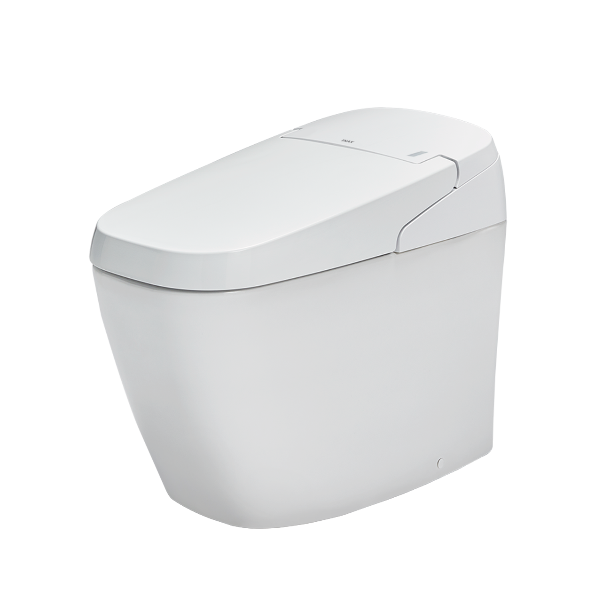
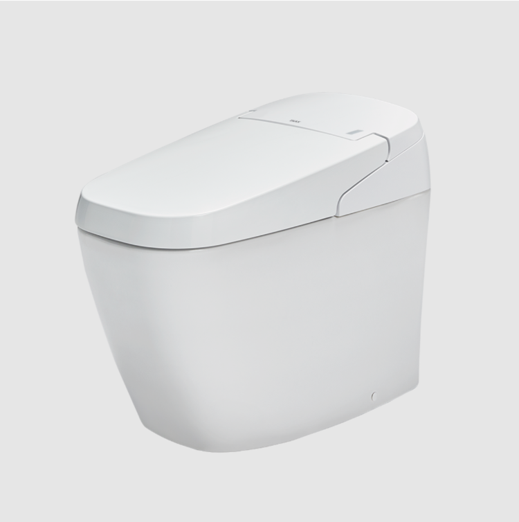
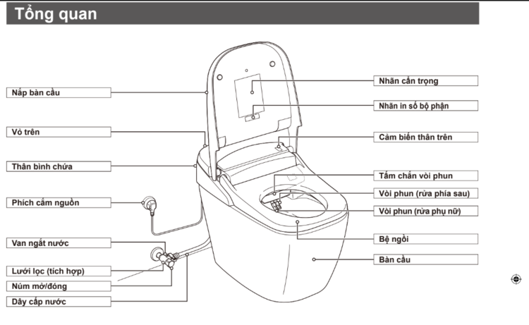

Bồn cầu thông minh INAX AC-G216VN/BW1 (Satis G) là dòng thiết bị vệ sinh thế hệ mới, hội tụ những công nghệ tiên tiến nhất từ Nhật Bản để mang lại trải nghiệm thư giãn và vệ sinh tuyệt đối. Với thiết kế không két nước tối giản và tông màu trắng (BW1) thanh lịch, sản phẩm là giải pháp hoàn hảo cho những không gian phòng tắm hiện đại và đẳng cấp.Thiết kế tối ưu diện tích kết hợp cùng công nghệ đột phá độc quyền INAXBồn cầu thông minh AC-G216VN/BW1 sở hữu kích thước 375 x 705 x 540 mm (Rộng x Sâu x Cao), giúp tối ưu hóa diện tích phòng tắm. Ngoài ra, các công nghệ vệ sinh đột phá độc quyền INAX cũng được tích hợp trong sản phẩm này, bao gồm:Aqua Ceramic: Công nghệ men sứ độc quyền ngăn chặn chất bẩn và cặn khoáng bám vào bề mặt, giữ cho bồn cầu luôn sáng bóng suốt 100 năm.Plasmacluster diệt khuẩn: Các ion dương và âm được giải phóng vào lòng bầu để tiêu diệt vi khuẩn, nấm mốc và khử mùi hôi hiệu quả.Đệm bọt chống bắn: Một lớp bọt mịn được tạo ra trên mặt nước giúp ngăn nước bắn ngược khi sử dụng, đảm bảo vệ sinh cho bệ ngồi.Lá chắn khí ngăn mùi: Hệ thống hút khí mạnh mẽ kết hợp màng lọc carbon giúp ngăn và khử mùi tự động ngay trong quá trình sử dụng.Tiện nghi với các tính năng tự động hóaBồn cầu SATIS thông minh INAX AC-G216VN/BW1 mang đến sự tiện lợi tối đa nhờ các tính năng tự động hoàn toàn, bao gồm:Tính năng đóng/mở tự động: Cảm biến hiện đại tự động mở nắp khi người dùng đến gần và đóng lại sau khi rời đi, vận hành êm ái không gây tiếng ồn.Xả nước thông minh: Hệ thống tự động nhận diện và xả nước sau khi sử dụng với hai mức xả tiết kiệm (3L và 4.5L).Vòi phun kép massage: Hai vòi phun riêng biệt cho vệ sinh đại tiện và phụ nữ, có thể điều chỉnh vị trí và chế độ massage nhẹ nhàng.Sưởi ấm và sấy khô: Bệ ngồi có chức năng sưởi ấm điều chỉnh được nhiệt độ; hệ thống sấy khô bằng khí ấm giúp thay thế hoàn toàn việc dùng giấy vệ sinh.Nhìn chung, bồn cầu thông minh INAX AC-G216VN/BW1 không chỉ là một thiết bị vệ sinh đơn thuần mà còn là giải pháp nâng tầm chất lượng sống, mang lại sự tiện nghi, sạch sẽ và sang trọng bền vững cho gia đình bạn.Video giới thiệu công nghệ Aqua Ceramic độc quyền INAXBản vẽ lắp đặt bồn cầu thông minh SATIS AC-216VN/BW1File hướng dẫn lắp đặt bồn cầu thông minh AC-G216VN/BW1Thông số kỹ thuật bồn cầu thông minh SATIS AC-216VN/BW1Mã sản phẩmAC-G216VN/BW1 (Satis G)Loại sản phẩmBồn cầu điện tử thông minh (Smart Toilet)Kích thước375 x 705 x 540 mm (Rộng x Dài x Cao)Thương hiệuINAXMàu sắcTrắng (BW1) - Thanh lịch, tinh tế và hiện đạiHệ thống xảHệ thống xả tự động kết hợp bơm điện tích hợp mạnh mẽ, tối ưu hiệu suất xả rửaCông nghệ nổi bật- Aqua Ceramic: Lớp men độc quyền chống bám bẩn, giữ bề mặt sứ trắng sáng suốt 100 năm - Plasmacluster: Công nghệ ion diệt khuẩn, khử mùi chủ động toàn diện lòng bầu - Đệm bọt: Lớp bọt mịn dày chống bắn nước và giảm thiểu tiếng ồn hiệu quả khi sử dụngTiện ích khác- Hệ thống phát sáng ban đêm dịu nhẹ, tiện lợi khi sử dụng - Trang bị điều khiển từ xa không dây hiện đại, thao tác dễ dàng - Chế độ tiết kiệm điện thông minh cho gia đìnhKhác- Hotline tư vấn và bảo hành chính hãng: 18006633
Bồn cầu thông minh AC-G216VN/BW1
Bàn cầu thông minh thương hiệu INAX.
Đã cập nhật danh sách yêu thích.
DANH MỤC: Bàn cầu thông minh
MÃ SẢN PHẨM: AC-G216VN/BW1
DEPTH: 705mm
HEIGHT: 375mm
WIDTH: 540mm
Bồn cầu thông minh INAX AC-G216VN/BW1 (Satis G) là dòng thiết bị vệ sinh thế hệ mới, hội tụ những công nghệ tiên tiến nhất từ Nhật Bản để mang lại trải nghiệm thư giãn và vệ sinh tuyệt đối. Với thiết kế không két nước tối giản và tông màu trắng (BW1) thanh lịch, sản phẩm là giải pháp hoàn hảo cho những không gian phòng tắm hiện đại và đẳng cấp.Thiết kế tối ưu diện tích kết hợp cùng công nghệ đột phá độc quyền INAXBồn cầu thông minh AC-G216VN/BW1 sở hữu kích thước 375 x 705 x 540 mm (Rộng x Sâu x Cao), giúp tối ưu hóa diện tích phòng tắm. Ngoài ra, các công nghệ vệ sinh đột phá độc quyền INAX cũng được tích hợp trong sản phẩm này, bao gồm:Aqua Ceramic: Công nghệ men sứ độc quyền ngăn chặn chất bẩn và cặn khoáng bám vào bề mặt, giữ cho bồn cầu luôn sáng bóng suốt 100 năm.Plasmacluster diệt khuẩn: Các ion dương và âm được giải phóng vào lòng bầu để tiêu diệt vi khuẩn, nấm mốc và khử mùi hôi hiệu quả.Đệm bọt chống bắn: Một lớp bọt mịn được tạo ra trên mặt nước giúp ngăn nước bắn ngược khi sử dụng, đảm bảo vệ sinh cho bệ ngồi.Lá chắn khí ngăn mùi: Hệ thống hút khí mạnh mẽ kết hợp màng lọc carbon giúp ngăn và khử mùi tự động ngay trong quá trình sử dụng.Tiện nghi với các tính năng tự động hóaBồn cầu SATIS thông minh INAX AC-G216VN/BW1 mang đến sự tiện lợi tối đa nhờ các tính năng tự động hoàn toàn, bao gồm:Tính năng đóng/mở tự động: Cảm biến hiện đại tự động mở nắp khi người dùng đến gần và đóng lại sau khi rời đi, vận hành êm ái không gây tiếng ồn.Xả nước thông minh: Hệ thống tự động nhận diện và xả nước sau khi sử dụng với hai mức xả tiết kiệm (3L và 4.5L).Vòi phun kép massage: Hai vòi phun riêng biệt cho vệ sinh đại tiện và phụ nữ, có thể điều chỉnh vị trí và chế độ massage nhẹ nhàng.Sưởi ấm và sấy khô: Bệ ngồi có chức năng sưởi ấm điều chỉnh được nhiệt độ; hệ thống sấy khô bằng khí ấm giúp thay thế hoàn toàn việc dùng giấy vệ sinh.Nhìn chung, bồn cầu thông minh INAX AC-G216VN/BW1 không chỉ là một thiết bị vệ sinh đơn thuần mà còn là giải pháp nâng tầm chất lượng sống, mang lại sự tiện nghi, sạch sẽ và sang trọng bền vững cho gia đình bạn.Video giới thiệu công nghệ Aqua Ceramic độc quyền INAXBản vẽ lắp đặt bồn cầu thông minh SATIS AC-216VN/BW1File hướng dẫn lắp đặt bồn cầu thông minh AC-G216VN/BW1Thông số kỹ thuật bồn cầu thông minh SATIS AC-216VN/BW1Mã sản phẩmAC-G216VN/BW1 (Satis G)Loại sản phẩmBồn cầu điện tử thông minh (Smart Toilet)Kích thước375 x 705 x 540 mm (Rộng x Dài x Cao)Thương hiệuINAXMàu sắcTrắng (BW1) - Thanh lịch, tinh tế và hiện đạiHệ thống xảHệ thống xả tự động kết hợp bơm điện tích hợp mạnh mẽ, tối ưu hiệu suất xả rửaCông nghệ nổi bật- Aqua Ceramic: Lớp men độc quyền chống bám bẩn, giữ bề mặt sứ trắng sáng suốt 100 năm - Plasmacluster: Công nghệ ion diệt khuẩn, khử mùi chủ động toàn diện lòng bầu - Đệm bọt: Lớp bọt mịn dày chống bắn nước và giảm thiểu tiếng ồn hiệu quả khi sử dụngTiện ích khác- Hệ thống phát sáng ban đêm dịu nhẹ, tiện lợi khi sử dụng - Trang bị điều khiển từ xa không dây hiện đại, thao tác dễ dàng - Chế độ tiết kiệm điện thông minh cho gia đìnhKhác- Hotline tư vấn và bảo hành chính hãng: 18006633
DANH MỤC: Bàn cầu thông minh
MÃ SẢN PHẨM: AC-G216VN/BW1
DEPTH: 705mm
HEIGHT: 375mm
WIDTH: 540mm